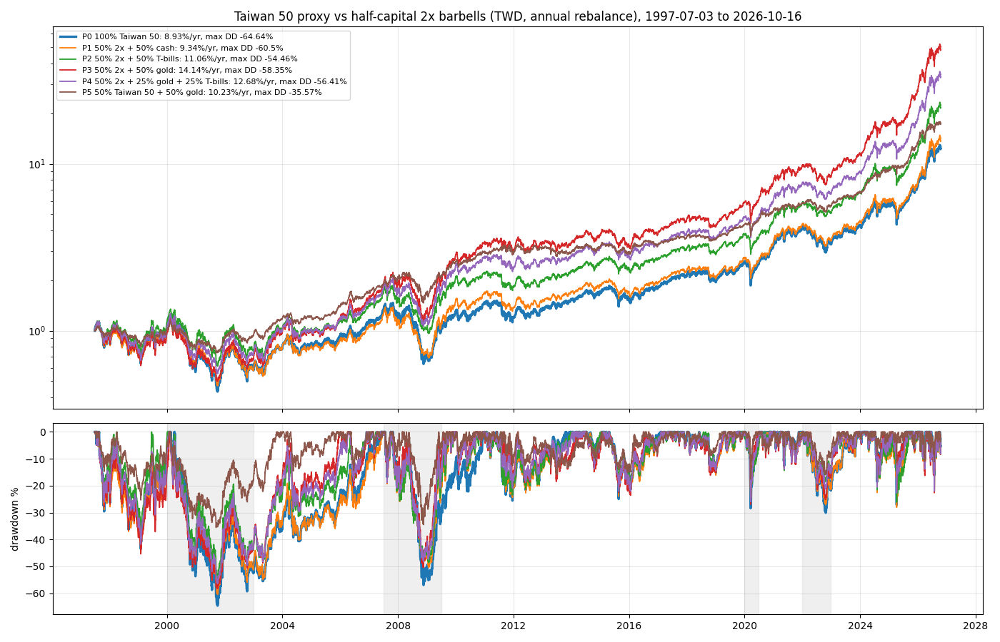

RS-TX-20261018-004 · TX · 2026-10-18
Through the 2000 and 2008 crashes the half-capital 2x barbells, rebalanced yearly, still fell 54–60% (Taiwan 50 proxy −65%); 50% Taiwan 50 + 50% gold kept it to −36%; no rebalancing rule beat annual in both halves
把期間拉到 1997–2026、包含 2000–2002 與 2008 崩盤，半數正二組合的最大回檔還會比全部持有台股小嗎？哪一種調回規則最好？
Headline Metrics 關鍵數字
-64.64
p0 max dd %
-58.35
p3 gold max dd %
-35.57
p5 0050 gold max dd %
14.14
p3 gold cagr %
Key Findings 重點發現
2008 等級崩盤時，每年調回的正二組合跌 54–60%
每年調回，1997–2026：台股代理 −64.64%（2000–2001）；正二＋公債 −54.46%、正二＋黃金 −58.35%、正二＋黃金＋公債 −56.41%。比台股小，但約是 2014–2026 年 −26–27% 的兩倍。
不用槓桿的 0050＋黃金各半：−36%
每年調回：最大回檔 −35.57%、年化 10.23%，台股代理 −64.64%、8.93%；金融海嘯期間 −34.50% 對 −56.97%。
每年調回的組合中，正二＋黃金報酬最高
年化 14.14%，台股代理 8.93%（偏離 ±10% 才調為 14.44%）；崩盤回檔接近台股。
沒有一種調回規則在兩段期間都勝過每年一次
每季或偏離就調，會在下跌途中一直加碼正二，加深崩盤回檔。完全不調：正二＋公債整段 −37.20%（1997–2013 −33.38%），但 2014–2026 −37.20% 對每年調回 −26.14%。兩段是同一條路徑的切片。
Chart 圖表


詮釋與實務意義
把期間拉到 1997–2026 年，包含 2000 和 2008 兩次崩盤後，每年調回的正二組合最大回檔仍有 −54% 到 −60%，只比單抱台股的 −65% 好一些；平時看到的 −26% 不代表崩盤時的風險。不用槓桿的 0050＋黃金各半，29 年最大回檔約 −36%。調回頻率方面，每年一次就夠，調得越頻繁越會在下跌途中加碼正二。
限制與注意事項
- 台股代理 = 加權 + 年 3.0%；2014–2026 年每年比真實 0050 少 3.6 個百分點，絕對報酬偏低。
- 合成正二 = 2 × 代理 − 年 2.0%（敏感度 4.0%）；2014 年前沒有真實正二。
- 2008 年 3 月前黃金為週收盤，低估日波動；紐約收盤延後一個台股交易日對齊。
- 單一 29 年路徑；兩次台股崩盤。
- 未計交易成本以外的稅。